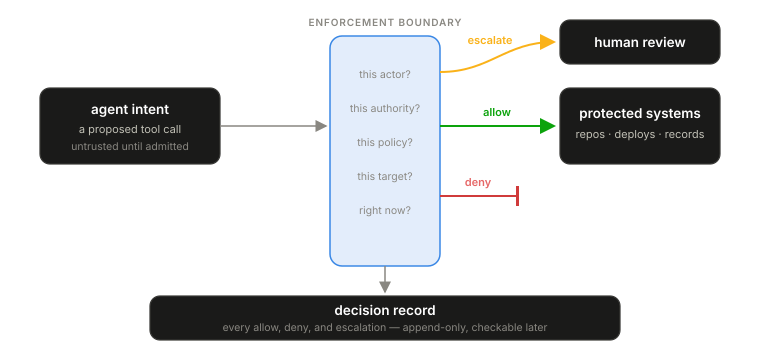

AI risk is usually discussed as if it lives inside the model. For production systems that view is too narrow. A model that writes a bad paragraph creates review burden. A model attached to tools can mutate infrastructure, leak data, change customer state, and consume budget. The governing object is the runtime action: the proposed tool call, the target, the arguments, the authority context.
The same model output can be harmless or dangerous depending on the action surface. “Restart the service” is inert text in a chat window. It becomes operationally meaningful the moment an agent calls a Kubernetes or CI/CD tool. “Find the customer’s account” is ordinary support work under a read-only lookup; the same request is a governance event when the agent attempts export, deletion, or cross-tenant access.
Behavioral governance starts from one commitment: intent is not authority. Model output, agent plans, and tool requests are untrusted proposals until an enforcement boundary admits a specific action. The governing decision is narrow — should this actor, with this authority, under this policy version, perform this action against this target, right now? Allowed, denied, or escalated to a human.

Most AI governance programs today are built from model evaluation, acceptable-use policy, prompt guidelines, and post-hoc monitoring. Those controls are useful and none of them defines an enforceable boundary around runtime behavior. An agent can still open the pull request, query the customer records, call the deployment API. Monitoring may detect the damage afterward; a governance system has to decide at the boundary, before the action reaches the protected system.
This differs from model governance, which evaluates model properties: training data, benchmarks, safety testing, deployment approval. Model governance stays necessary. It cannot answer whether a specific agent action against a specific enterprise system should be allowed at 14:03 under the policy version then in force. Only a runtime boundary can.
And the boundary must leave evidence. Every governance decision — every allow, deny, and escalation — is recorded the same way the rest of Volume I records execution: append-only, attributable, checkable after the fact. A governance program that cannot show its decision record is asserting control, not exercising it. Governance without evidence is theater; evidence without governance is archaeology. Production systems need the boundary and the record.
Behavioral governance does not pretend model behavior can be made predictable. It bounds what unpredictability is allowed to do.
In our reference architecture these are separate systems: the Blackridge Runtime Gateway (BRG) handles runtime spend forensics on the model wire, and the Blackridge Control Plane (BCP) governs privileged actions on the tool wire. Different wires, different decisions, same evidence discipline.
The full paper
Paper 5 develops the enforcement model in depth: how authority is granted and bounded, how proposed actions are checked before execution, how human review fits without becoming a bottleneck, a worked reference scenario, and the failure modes of governance programs that stop at policy documents. The full paper is available to teams we work with — what we publish and what we gate.
Next: Paper 6 — Runtime Economics, the operating loop that runs on the same evidence.